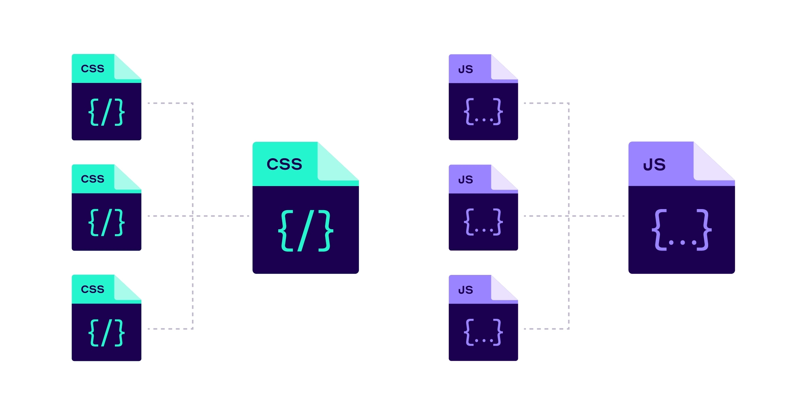

CDN is content delivery network has been around since 90s. It was originally developed to speed up the delivery of static HTML content for users all around the world. Nowadays, a CDN should be used whenever HTTP traffic is served.
Working of a CDN
1. Content Distribution: The CDN consists of a network of servers distributed across various geographic locations, known as Points of Presence (PoPs). These servers store cached copies of website content, such as images, videos, scripts, and other static assets.
2. User Request: When a user accesses a website, their browser sends a request to the website's origin server to retrieve the content. However, if the website is using a CDN, the request is intercepted by the CDN's edge server located closest to the user.
3. Edge Server Selection: The CDN's edge server determines the user's location based on factors such as IP address and network proximity. It then routes the user's request to the nearest PoP in the CDN network.
4.Content Delivery: The edge server at the PoP retrieves the requested content from the origin server, if it's not already cached locally. It then delivers the content to the user's browser.
5. Caching and Optimization: The edge server caches the content locally for future requests, reducing the need to fetch it from the origin server again. Additionally, modern CDNs often perform optimizations such as minification, compression, and format conversion to further improve performance.
6. Load Balancing and Redundancy: CDNs use load balancing techniques to distribute traffic evenly across their network of edge servers, preventing any single server from becoming overloaded. Moreover, CDNs offer redundancy and failover mechanisms to ensure high availability in case of server failures or network issues.
7. Dynamic Content Delivery: While CDNs are primarily used for caching static content, they also support dynamic content delivery through techniques like edge computing and dynamic caching. This allows CDNs to cache and serve personalized or dynamically generated content efficiently.
- Edge Servers: These are servers located at various points of presence (PoPs) around the globe. They cache content from the origin server.
- Origin Server: This is the main server where the original content is stored.
- CDN Provider: The company that provides the CDN service and infrastructure.
Two common ones are DNS-based routing and Anycast:
- with DNS-based routing, each PoP has its own IP address. When the user Looks up the IP address for the CDN,DNS returns the IP address of the PoP closest to them.
- with Anycast, all PoPs share the same IP address. When a request comes into the Anycast network for that IP address, the network sends the request to the PoP that is closest to the requester.
Each edge server acts as a reverse proxy with a huge content cache .Static contents are cached on the edge server in this content cache. If a piece of content is in the cache, it could be quickly returned to the user. Since edge server only asks for a copy of the static content from the original server if it is not in its cache, this greatly reduces the load and bandwidth requirements of the original server cluster.
Content Transformation / TLS Termination
A modern CDN could also transform static content into more optimized formats. For example, it could minify JavaScript bundles on the fly, or transform an image file form an old format to modern one like WebP or AVIF.
An edge server also serves a very important role in modern HTTP stack. All TLS connections terminate at the edge server. TLS handshake are expensive .
Beside performance, a modern CDN brings two other major benefits:
- Security : All modern CDNs have huge network capacity at the edge. This is the key to providing effective DDoS protection against large-scale attacks my having a network with a capacity much larger than the attackers.
- Availability : By having copies of content available in many PoPs, a CDN can withstand many more hardware failures than the origin servers.
Popular CDN Providers
There are several well-known CDN providers available, including:
- Cloudflare
- Amazon CloudFront
- Google Cloud CDN
- Microsoft Azure CDN
- Fastly
- Akamai
Each of these providers offers different features and pricing models, so it's important to choose the one that best fits your needs.